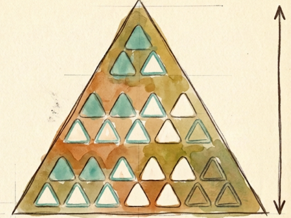
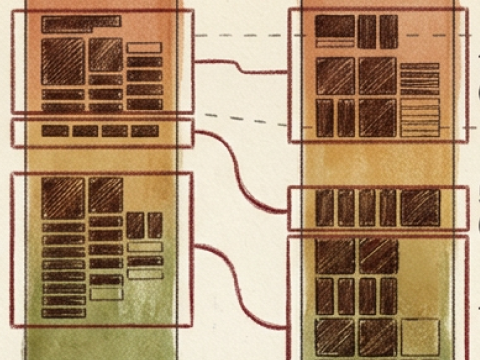
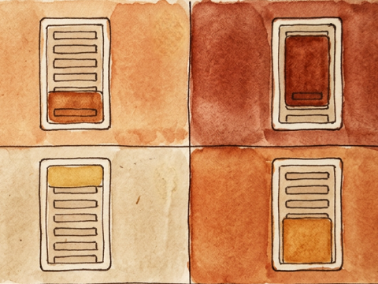

Projetos selecionados

Estratégia · DesignOps · 2025
IA como infraestrutura de UX
Como transformei IA em infraestrutura para manter escala, engajamento e qualidade após a redução de 1/3 da equipe.
Mesma qualidade, um terço a menos de time, três vezes mais agilidade.
Ver o case
Redesign · Design System · 2024
GZH Home Redesign
Equilibrar tradição e inovação para modernizar uma das maiores plataformas de jornalismo digital do Brasil, no ano em que Zero Hora completava 60 anos.
De 120 mil para mais de 200 mil assinantes digitais.
Ver o case
Monetização · Pesquisa · 2026
Portfólio de Publicidade GZH
Decidir onde a receita programática podia crescer sem comprometer a percepção de valor do produto e a confiança do usuário.
R$ 700 mil incrementais nos primeiros testes, com apenas 2 cancelamentos.
Ver o caseSobre
Cresci jogando em equipe. Tabuleiro, videogame, RPG. Sempre preferi os jogos onde o resultado depende de todo mundo funcionando bem junto.
Talvez seja por isso que acabei em UX.
Na biologia existe um conceito chamado mutualismo: quando duas espécies colaboram de forma que ambas saem ganhando. Não é altruísmo. É a lógica de que 1+1 pode virar 3 se as condições certas existirem.
Criar essas condições é o que faço há 14 anos como designer. Há 9 deles na RBS, onde entrei para ajudar a construir GZH, a fusão da Rádio Gaúcha com o jornal Zero Hora no digital. Dois legados que, juntos, viraram algo maior do que a soma das partes.
Hoje lidero o time responsável pela experiência de produtos usados por milhões de gaúchos espalhados pelo mundo. E o desafio segue o mesmo: pegar o que existe e fazer render mais do que parecia possível. Quando o time encolheu, não cortei ambição. Estruturei conhecimento como infraestrutura, tornei explícito o que estava implícito e usei IA para escalar o operacional enquanto as pessoas passavam a dirigir a estratégia. Humanos mais capazes, entregas melhores, time mais saudável.
Meu trabalho começa onde as coisas não se encaixam: onde times não se entendem, onde o usuário foi esquecido numa decisão de negócio, onde a tecnologia avançou mais rápido do que a clareza sobre o problema.
É nessa intersecção entre design, produto e estratégia que consigo contribuir de verdade.
Uso clareza e design para criar experiências onde as pessoas, usuários e times, se sentem no lugar certo.